에너지관리기사 (2010-03-07 기출문제)
1과목: 연소공학
1. 기체 옥탄(C8H18)의 연소엔탈피는 반응물 중의 수증기가 응축되어 물이 되었을 때 25℃에서 -48220kJ/kg이다. 이 상태에서 기체 옥탄의 저위발열량은 약 몇 kJ/kg인가? (단, 25℃에서 물의 증발 엔탈피는 2441.8kJ/kg이다.)
- 43250
- 44150
- 44750
- 45778
(정답률: 50%)

2. 다음 액체 연료 중 비중이 가장 낮은 것은?
- 중유
- 등유
- 경유
- 가솔린
(정답률: 83%)
3. 보일러실에 자연화기가 안될 때 실외로부터 공급하여야 할 연소공기는 벙커C유 1L당 최소한 몇 Nm3이 필요한가? (단, 벙커C유의 이론공기량은 10.24Nm3/kg, 비중은 0.96, 연소장치의 공기비는 1.3으로 한다.)
- 11
- 13
- 15
- 17
(정답률: 63%)
4. 1차, 2차 연소 중 2차 연소란 어떤 것을 말하는가?
- 공기보다 먼저 연료를 공급했을 경우 1차, 2차 반응에 의해서 연소하는 것
- 불완전 연소에 의해 발생한 미연가스가 연도 내에서 다시 연소하는 것
- 완전 연소에 의한 연소가스가 2차 공기에 의해서 폭발되는 현상
- 점화할 때 착화가 늦었을 경우 재점화에 의해서 연소 하는 것
(정답률: 81%)
5. 다음 열정산방식에 대한 설명 중 틀린 것은?(오류 신고가 접수된 문제입니다. 반드시 정답과 해설을 확인하시기 바랍니다.)
- 기준온도는 실내온도를 원칙으로 하며, 실내온도가 없는 경우는 25℃를 기준으로 한다.
- 시험부하는 원칙적으로 정격부하로 하고 필요에 따라 3/4, 1/2, 1/3 등으로 시행한다.
- 시험은 시험용 보일러를 다른 보일러와 무관한 상태에서 시행한다.
- 연료의 발열량은 고위발열량으로 한다.
(정답률: 43%)
6. 통풍력이 수주 35mm일 때의 풍압은 약 몇 kgf/cm2인가?
- 0.35
- 0.035
- 0.0035
- 0.00035
(정답률: 62%)
7. 질량으로 C 84%, H 15.9%의 조성을 가지는 탄화수소연료의 분자량은 114이다. 이 원료 1물의 완전연소에 필요한 공기의 몰수는 약 얼마인가? (단, 원자량은 각각 C는 12, H는 1이다.)
- 40
- 46
- 60
- 64
(정답률: 40%)
8. 다음 연료 중 발열량(kcal/kg)이 가장 큰 것은?
- 중유
- 프로판
- 무연탄
- 코크스
(정답률: 85%)
9. 각 공급 물질이나 생성 물질의 양을 직접 측정할 수 없는 경우에 원소분석이나 가스분석에 의해 계산하여 구하는 것을 통칭하여 무엇이라 하는가?
- 물질정산
- 연료분석
- 열정산
- 공업분석
(정답률: 73%)
10. 연소장치의 연돌통풍에 대한 설명 중 틀린 것은?
- 연돌의 단면적은 연도의 경우와 마찬가지로 연소량과 가스의 유속에 관계한다.
- 연돌의 통풍력은 외기온도가 높아짐에 따라 통풍력이 감소하므로 주의가 필요하다.
- 연돌의 통풍력은 공기의 습도 및 기압에 관계없이 외기온도에 따라 달라진다.
- 연돌의 설계에서 연돌상부 단면적을 하부단면적 보다 작게 한다.
(정답률: 78%)
11. 다음 중 층류연소속도의 측정방법이 아닌 것은?
- 슬롯노즐버너법
- 적하수은법
- 비누거품법
- 평면화염버너법
(정답률: 67%)
12. 도시가스의 조성을 조사하니 H2 30V%, CO 6v%, CH4 40v%, CO2 24v%이었다. 이 도시가스를 연소하기 위해 필요한 이론 산소량 보다 20% 많게 공급했을 때 실제공기량은 약 몇 Nm3/Nm3인가? (단, 공기 중 산소는 21v%이다.)
- 2.6
- 3.6
- 4.6
- 5.6
(정답률: 34%)
13. 연소에서 사용되고 있는 공기비는 흔히 m으로 표시한다. 다음 중 올바른 식은?
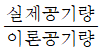
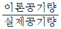
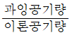
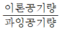
(정답률: 83%)
14. 기체연료의 연소방식을 크게 2가지로 분류한 것은?
- 등심연소와 분산연소
- 예혼합연소와 확산연소
- 액면연소와 증발연소
- 증발연소와 분해연소
(정답률: 82%)
15. 탄화수소인 CmHn 1Nm3가 연소하였을 때 생성되는 H2O의 양은 몇 Nm3 인가?
- n
- 2n
- n/2
- n/4
(정답률: 73%)
16. 연소기의 배기가스 연도에 댐퍼를 부착하는 이유로 가장 거리가 먼 것은?
- 통풍력을 조절한다.
- 과잉공기를 조절한다.
- 가스의 흐름을 차단한다.
- 주연도, 부연도가 있는 경우에는 가스의 흐름을 바꾼다.
(정답률: 75%)
17. 과잉공기를 공급하여 어떤 연료를 연소시켜 건연소가스를 분석하였다. 그 결과 CO2, O2 및 N2의 함유율이 각각 16%, 1% 및 82% 이었다면 이 연료의 최대탄산가스율은 몇 %인가?
- 15.6
- 16.8
- 17.4
- 18.2
(정답률: 58%)
18. 연소 배기가스의 분석결과 CO2의 함량이 13.4%이었다. 벙커 C유(55L/h)의 연소에 필요한 공기량은 약 몇 Nm3/min인가? (단, 벙커 C유의 이론공기량은 12.5Nm3/kg이고, 밀도는 0.93g/cm3이며, CO2max은 15.5%이다.)
- 12.33
- 49.03
- 63.12
- 73.99
(정답률: 37%)
19. 석탄 저장시 자연발화 및 풍화작용에 유의하여 저탄장을 설치 운용하여야 한다. 다음 중 저탄 관리상 옳지 않은 설명은?
- 저탄장은 1/100~1/150의 경사를 두어 배수를 양호하게하고 30m2마다 1개소 이상의 통기구를 마련한다.
- 자연발화를 억제하기 위해 탄층은 옥외 저탄시 4m이상 옥내 저탄시 2m 이상으로 가급적 높게 쌓는다.
- 풍화작용을 억제하기 위해 가급적 수분과 휘발분이 적고 입자가 큰 석탄을 선택하여야 한다.
- 풍화작용은 외기온도 및 저장기간의 영향을 크게 받으므로 저장일은 30일 이내로 한다.
(정답률: 74%)
20. 프로판 1Nm3를 공기비 1.1로서 완전연소시킬 경우 건연소가스량은 약 몇 Nm3인가?
- 20.2
- 24.2
- 26.2
- 33.2
(정답률: 56%)
2과목: 열역학
21. 다음 중 단열과정(adiabatic process)은?
- 압력이 일정한 과정
- 내부 에너지가 일정한 과정
- 행한 일이 없는 과정
- 경계를 통한 열전달이 없는 과정
(정답률: 69%)
22. 엔탈피 25kcal/kg인 물을 보일러에서 가열하여 엔탈피 756kcal/kg인 증기로 만들어 10ton/h의 유량으로 증기터빈에 승입하였더니 출구 엔탈피는 596kcal/kg였다. 보일러의 가열량은 약 몇 kcal/h인가?
- 2.6×106
- 7.3×106
- 13.8×106
- 25.0×106
(정답률: 60%)
23. 냉동기의 냉매로서 갖추어야 할 요구조건으로 적당하지 않은 것은?
- 불활성이고 안정해야 한다.
- 비체적이 커야 한다.
- 증발온도에서 높은 잠열을 가져야 한다.
- 열전도율이 커야 한다.
(정답률: 74%)
24. 80℃의 물 50kg과 10℃의 물 100kg을 혼합하면 이 혼합된 물의 온도는 약 몇 ℃인가? (단, 물의 비열은 4.2kJ/kgㆍK이다.)
- 33℃
- 40℃
- 45℃
- 50℃
(정답률: 44%)
25. 랭킨 사이클로 작동되는 발전소의 효율을 높이려고 할 때 증기터빈의 초압과 배압은 어떻게 하여야 하는가?
- 초압과 배압 모두 올림
- 초압을 올리고 배압을 낮춤
- 초압은 낮추고 배압을 올림
- 초압과 배압 모두 낮춤
(정답률: 78%)
26. 등온과정에서 외부에 하는 일에 대한 표현으로 틀린 것은? (단, R은 기체상수, m은 계의 질량을 나타낸다.)
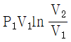
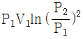
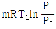
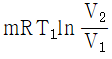
(정답률: 63%)
27. 다음 중 표준(이상) 사이클에서 동일 냉동 능력에 대한 냉매순환량(kg/h)이 가장 적은 것은?
- NH3
- R-12
- R-22
- R-113
(정답률: 82%)
28. 성능계수(coefficient of performance)가 2.5인 냉동기가 있다. 15 냉동톤(refrigeration ton)의 냉동용량을 얻기 위해서 냉동기에 공급해야할 동력(kW)은? (단, 1 냉동톤은 3.861kW이다.)
- 20.5
- 23.2
- 27.5
- 29.7
(정답률: 61%)
29. 이상기체의 단위 질량당 내부에너지 u, 엔탈피 h, 엔트로피 s에 관한 다음의 관계식 중에서 모두 옳은 것은? (단, T는 절대온도, p는 압력, v는 비체적을 나타낸다.)
- Tds=du-vdp, Tds=dh-pdv
- Tds=du+pdv, Tds=dh-vdp
- Tds=du-vdp, Tds=dh+pdv
- Tds=du+pdv, Tds=dh+vdp
(정답률: 73%)
30. 증기터빈에서 속도 조절에 사용되는 것은?
- 공기예열기
- 복수기
- 증기 가감 밸브
- 증기노즐
(정답률: 71%)
31. 카르노 사이클을 이루는 네 개의 가역과정이 아닌 것은?
- 가역 단열팽창
- 가역 단열압축
- 가역 등온압축
- 가역 등압팽창
(정답률: 73%)
32. 다음 공기 표준사이클(air standard cycle) 중 두 개의 등온과정과 두 개의 정압과정으로 구성된 사이클은?
- 디젤(Diesel) 사이클
- 사바테(Sabathe) 사이클
- 에릭슨(Ericsson) 사이클
- 스터링(Stirling) 사이클
(정답률: 66%)
33. 직경 30cm의 피스톤이 900kPa 의 압력에 대항하여 15cm 움직였을 때 한 일은 약 몇 kJ인가?
- 9.54
- 63.6
- 254
- 1350
(정답률: 42%)
34. 이상기체의 내부 에너지변화 dU를 옳게 나타낸 것은? (단, Cp는 정압비열, Cv는 정적비열, T는 온도이다.)
- CpdT
- CvdT
- Cp/Cv dT
- CvCpdT
(정답률: 72%)
35. 이상기체 1kmol을 1.013bar, 16℃에서 먼저 정압으로 냉각한 후 정적에서 가열하여 5.06bar, 16℃가 되게 하였다. 이 기체의 마지막 상태에서 부피는 약 몇 m3인가?
- 23.7
- 22.4
- 10.74
- 4.74
(정답률: 21%)
36. 포화증기를 단열 압축시켰을 때의 설명으로 옳은 것은?
- 압력과 온도가 올라간다.
- 압력은 올라가고 온도는 떨어진다.
- 온도는 불변이며 압력은 올라간다.
- 압력과 온도 모두 변하지 않는다.
(정답률: 63%)
37. 이상적인 기본 랭킨(Rankine) 사이클의 열효율에 관한 다음 설명 중 옳은 것을 모두 나열한 것은?
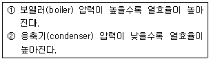
- ①
- ②
- ①, ②
- 모두 틀렸다.
(정답률: 79%)
38. 다음 그림은 어떠한 사이클과 가장 가까운가?
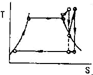
- 디젤(diesel) 사이클
- 재열(reheat) 사이클
- 합성(composite) 사이클
- 재생(regenerative) 사이클
(정답률: 76%)
39. 비열이 3.2kJ/kgㆍ℃인 액체 10kg을 20℃로부터 80℃까지 연열기로 가열시키는데 필요한 소요전력량은 몇 kWh인가? (단, 전열기의 효율은 90%이다.)
- 0.46
- 0.59
- 480
- 530
(정답률: 51%)
40. 임계점(Critocal Point)의 설명 중 옳지 않은 것은?
- 임계점에서는 액상과 기상을 구분할 수 없다.
- 임계온도 이상에서는 순수한 기체를 아무리 압축시켜도 액화되지 않는다.
- 액상, 기상, 고상이 함께 존재하는 점을 말한다.
- 액상과 기상이 평형 상태로 존재할 수 있는 최고온도 및 최고압력을 말한다.
(정답률: 69%)
3과목: 계측방법
41. 색온도계(color pyrometer)에 대한 설명으로 옳은 것은?
- 온도에 따라 색이 변하는 일원적인 관계로부터 온도를 측정한다.
- 바이메탈 온도계의 일종이다.
- 유체의 팽창정도를 이용하여 온도를 측정한다.
- 기전력의 변화를 이용하여 온도를 측정한다.
(정답률: 77%)
42. 다음 중 가스크로마토그래피 분석기의 컬럼(Column)에 쓰이는 흡착제가 아닌 것은?
- 활성탄
- 미분탄
- 실리카겔
- 활성알루미나
(정답률: 61%)
43. 다음 중 1차계 제어계에서 시간상수에 대한 관계식은?
- τ=C×R
- τ=C÷R
- τ=R+C
- τ=R-C
(정답률: 60%)
44. 아르키메데스의 부력 원리를 이용한 액면측정 기기는?
- 차압식 액면계
- 퍼지식 액면계
- 기포식 액면계
- 편위식 액면계
(정답률: 75%)
45. 다음 중 오르자트식 가스분석계로 측정하기 곤란한 것은?
- O2
- CO2
- CH4
- CO
(정답률: 73%)
46. 가스온도를 열전대 온도계를 써서 측정할 때 주의해야 할 사항으로 틀린 것은?
- 열전대는 측정하고자 하는 곳에 정확히 삽입하며 삽입된 구멍에 냉기(冷氣)가 들어가지 않게 한다.
- 주위의 고온체로부터의 복사열의 영향으로 인한 오차가 생기지 않도록 해야 한다.
- 단자의 +, -를 보상도선의 -, +와 일치하도록 연결하여 감온부의 열팽창에 의한 오차가 발생하지 않도록 한다.
- 보호관의 선택에 주의한다.
(정답률: 81%)
47. 조절기의 제어동작 중 비례적분 동작을 나타내는 기호는?
- P
- PI
- PID
- PD
(정답률: 75%)
48. 측정온도범위가 -210~780℃정도이며, (-)축이 콘스탄탄으로 구성된 열전대는?
- R형
- K형
- S형
- J형
(정답률: 59%)
49. 오벌(Oval)식 유량계의 특징에 대한 설명으로 틀린 것은?
- 타원형 치차의 맞물림을 이용하므로 비교적 측정점도가 높다.
- 기체유량 측정은 불가능하다.
- 유량계의 앞부분(前部)에 여과기(strainer)를 설치하지 않아도 된다.
- 설치가 간단하고 내구력이 있다.
(정답률: 75%)
50. 가스분석계인 자동 화학식 CO2계에 대한 설명으로 틀린 것은?
- 조작은 모두 자동화되어 있다.
- 구조상 튼튼하고 점검과 보수가 용이하다.
- 홀수액 선정에 따라 O2 및 CO의 분석계로도 사용할 수 있다.
- 선택성이 비교적 좋다.
(정답률: 58%)
51. 그림과 같은 U자관에서 유도되는 식은?
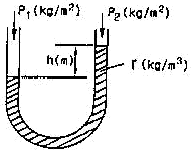
- P1+P2-h
- h=γ(P1-P2)
- P1+P2=γh
- P1=P2+γh
(정답률: 68%)
52. 다음 중 적분 동작이 가장 많이 사용되는 제어는?
- 증기압력
- 유량압력
- 유량제어
- 레벨제어
(정답률: 63%)
53. 자동제어계에서 응답을 나타낼 때 목표치를 기준한 앞뒤의 진동으로 시간의 지연을 필요로 하는 시간적 동작의 특성을 의미하는 것은?
- 동특성
- 스텝응답
- 정특성
- 과도응답
(정답률: 66%)
54. 금속식 다이어프램압력계(diaphragm gauge)의 최고 측정범위는?
- 0.5kg/cm2
- 6kg/cm2
- 10kg/cm2
- 20kg/cm2
(정답률: 46%)
55. 다음 중 스로틀(throttle)기구에 의하여 유량을 측정하지 않는 유량계는?
- 오리피스미터
- 벤투리미터
- 오벌미터
- 플로노즐
(정답률: 63%)
56. 낮은 압력을 측정하는데 사용되는 피라니 압력계(pirani gauge)의 원리는 압력에 따른 기체의 어떤 성질의 변화를 이용한 것인가?
- 비중
- 열전도
- 비열
- 압축인자
(정답률: 60%)
57. 서미스터 온도계에 대한 설명으로 틀린 것은?
- 응답이 빠르다.
- 소형으로서 좁은 장소의 측온에 적합하다.
- 일반적으로 소자의 온도 특성인 균일성을 얻기 쉽다.
- 온도에 의한 저항변화를 이용한 것이다.
(정답률: 54%)
58. 다음 중 질량유량 W[kg/s]에 대하여 옳게 표현한 식은? (단, V[m3/s]는 부피유량, ρ[m3/s]는 유체의 밀도이다.)
- W=Vㆍρ
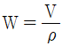
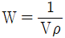
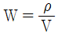
(정답률: 59%)
59. 링밸런스식 압력계에 대한 설명으로 옳은 것은?
- 부식성가스나 습기가 많은 곳에서도 정도가 좋다.
- 도압관은 가늘고 긴 것이 좋다.
- 측정 대상 유체는 주로 액체이다.
- 압력원에 접근하도록 계기를 설치해야 한다.
(정답률: 54%)
60. 세라믹식 O2계의 특징을 설명한 것 중 틀린 것은?
- 비교적 응답이 빠르며(5~30초) 측정가스의 유량이나 설치장소의 주위온도 변화에 의한 영향이 적다.
- 주로 저농도가스 분석에 적합하다.
- 측정 범위도 ppm으로부터 %까지 광범위하게 측정할 수 있다.
- 측정부의 온도유지를 위하여 온도조절 전기로를 필요로 한다.
(정답률: 57%)
4과목: 열설비재료 및 관계법규
61. 폐열 발생사업장에서 이용하지 않는 폐열을 공동이용 또는 제3자에 대한 공급을 위한 당사자간 협의를 할 수 없을 경우 지식경제부에서 할 수 있는 조치는?
- 협조통지
- 벌금에 처함
- 과태료에 처함
- 조정안의 작성 및 수락 권고
(정답률: 68%)
62. 공업로의 에너지절감 대책으로서 틀린 것은?
- 배열을 재료의 예열에 이용
- 노체 열용량의 증가
- 공연비의 개선
- 단열의 강화
(정답률: 71%)
63. 열에너지의 손실을 적게 하기 위해서는 보온재의 선택조건을 고려해야 한다. 다음 중 보온재의 선택조건으로 가장 거리가 먼 것은?
- 노재의 수분 함유로 인한 급격한 승온의 고려(昇溫)
- 물리적 화학적 강도와 내용(耐用)년수
- 단위 체적당의 가격 및 불연성
- 사용온도 범위와 열전도도
(정답률: 57%)
64. 공공사업주관자의 에너지사용계획 제출 대상사업의 기준은?
- 연료 및 열 : 연간 5천 티.오.이 이상, 전력 : 연간 2천만 킬로왓트시 이상 사용하는 시설
- 연료 및 열 : 연간 2천오백 티.오.이 이상, 전력 : 연간 1천만 킬로왓트시 이상 사용하는 시설
- 연료 및 열 : 연간 5천 티.오.이 이상, 전력 : 연간 1천만 킬로왓트시 이상 사용하는 시설
- 연료 및 열 : 연간 2천 티.오.이 이상, 전력 : 연간 2천만 킬로왓트시 이상 사용하는 시설
(정답률: 58%)
65. 지름이 1m인 관속을 3600m3/h로 흐르는 유체의 평균유속은 약 몇 m/s인가?
- 0.24
- 1.27
- 4.78
- 5.36
(정답률: 61%)
66. 광석을 공기의 존재하에서 가열하여 금속산화물 또는 산소를 함유한 금속화합물로 바꾸는 조작을 무엇이라고 하는가?
- 염화배소
- 환원배소
- 산화배소
- 황산화배소
(정답률: 69%)
67. 지식경제부장관은 에너지사용자에 대한 에너지관리 상황을 조사한 결과, 에너지관리기준을 순수치 않았을 경우 에너지기준의 이행을 위해 어떤 조치를 할 수 있는가?
- 과태료
- 개선 권고
- 영업정지
- 지도
(정답률: 57%)
68. 터널요의 3개 구조부에 해당하지 않는 것은?
- 용융뷰
- 예열부
- 소성부
- 냉각부
(정답률: 71%)
69. 벽돌을 1⑤~120℃에서 건조시켰을 때 무게를 W, 이것을 물속에서 3시간 끓인 다음 물속에서 유지시켰을 때의 무게를 W1, 물속에서 끄집어내어 표면에 묻은 수분을 닦은 후의 무게를 W2라고 할 때 흡수율을 구하는 식은?
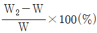
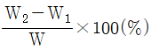
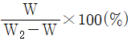
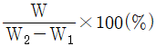
(정답률: 45%)
70. 다음 중 관의 신축량에 대한 설명으로 옳은 것은?
- 신축량은 관의 열팽창계수, 길이, 온도차에 반비례한다.
- 신축량은 관의 열챙창계수, 길이, 온도차에 비례한다.
- 신축량은 관의 길이, 온도차에는 비례하지만 열팽창계수에는 반비례한다.
- 신축량은 관의 열챙창계수에 비례하고 온도차와 길이에 반비례한다.
(정답률: 78%)
71. 검사대상기기에 대한 설명 중 틀린 것은?
- 개조검사 중 연료 또는 연소방법의 변경에 따른 개조검사의 경우에는 검사유효기간을 적용치 아니한다.
- 검사대상기기 검사수수료 산정에 있어 온수보일러의 용량산정은 697.8kW를 1t/h으로 본다.
- 가스사용량이 17kg/h를 초과하는 가스용 소형온수보일러에서 면제되는 검사는 설치검사이다.
- 에너지관리산업기사 자격소지자는 모든 검사대상기기에 대하여 조종이 가능하다.
(정답률: 53%)
72. 350℃ 이하에서 사용압력이 비교적 낮은 배관에 사용하며, 백관과 흑관으로 구분되는 강관의 종류는?
- SPP
- SPPH
- SPPY
- SPA
(정답률: 70%)
73. 샤모트(chamotte) 벽돌의 원료로서 샤모트 이외에 가소성 생점토(生粘土)를 가하는 주된 이유는?
- 치수 안정을 위하여
- 열전도성을 좋게 하기 위하여
- 성형 및 소결성을 좋게 하기 위하여
- 건조 소성, 수축을 미연에 발지하기 위하여
(정답률: 72%)
74. 에너지이용합리화법상의 효율관리기자재에 속하지 않는 것은?
- 전기철도
- 삼상유도전동기
- 전기세탁기
- 자동차
(정답률: 65%)
75. 규석질 벽돌의 특징에 대한 설명으로 틀린 것은?
- 내화도가 높다.
- 하중연화 온도변화가 크다.
- 저온에서 스폴링이 발생되기 쉽다.
- 내마모성이 좋고 열전도율은 비교적 크다.
(정답률: 43%)
76. 셔틀요(shuttle kiln)의 특징에 대한 설명으로 가장 거리가 먼 것은?
- 가마의 보유열보다 대차의 보유열이 열 절약의 요인이 된다.
- 급냉파가 안 생길 정도의 고온에서 제품을 꺼낸다.
- 가마 1개당 2대 이상의 대차가 있어야 한다.
- 가마의 보유열이 주로 제품의 예열에 쓰인다.
(정답률: 60%)
77. 가스로 중 주로 내열강재의 용기를 내부에서 가열하고 그 용기 속에 열처리폼을 장입하여 간접가열하는 노를 무엇이라고 하는가?
- 레토르트로
- 오븐로
- 머플로
- 라디안트튜브로
(정답률: 68%)
78. 용접검사가 면제되는 대상범위에 해당되지 않는 것은?
- 강철제 보일러 중 전열면적이 5m2 이하이고, 최고사용압력이 0.35Mpa 이하인 것
- 주철제보일러
- 압력용기 중 동체의 두께가 6mm 미만으로서 최고사용압력(MPa)과 내용적(m3)을 곱한 수치가 0.02 이하인 것
- 온수보일러로서 전열면적이 20m2 이하이고, 최고사용 압력이 0.3MPa 이하인 것
(정답률: 59%)
79. 옥내온도 15℃, 외기온도 5℃일 때 콘크리트 벽(두께 10cm, 길이 10m 및 높이 5m)을 통한 열손실이 1500kcal/h아면 외부 표면 열전달계수는 약 몇 kcal/m2ㆍhㆍ℃인가? (단, 내부표면 열전달계수는 8.0kcal/m2ㆍhㆍ℃이고, 콘크리트 열전도율은 0.7443 kcal/m2ㆍhㆍ℃이다.)
- 11.5
- 13.5
- 15.5
- 17.5
(정답률: 48%)
80. 에너지절약전문기업의 등록신청서는 누구에게 제출하여야 하는가?(관련 규정 개정전 문제로 여기서는 기존 정답인 3번을 누르면 정답 처리됩니다. 자세한 내용은 해설을 참고하세요.)
- 노동부장관
- 에너지관리공단이사장
- 지식경제부장관
- 시, 도지사
(정답률: 57%)
5과목: 열설비설계
81. 저위발열량이 10000kcal/kg인 연료를 사용하고 있는 실제 증발량 4t/h 보일러에서 급수온도 40℃, 발생증기의 엔탈피가 650kcal/kg일 때 연료 소비량은 약 몇 kg/h인가? (단, 보일러의 효율은 85%이다.)
- 251
- 287
- 361
- 397
(정답률: 62%)
82. 관 스테이의 최소 단면적을 구하려고 한다. 이 때 적용하는 설계 계산식은? [단, S : 관 스테이의 최소 단면적(mm2), A : 1개의 관 스테이가 지시하는 면적(cm2), a : A 중에서 관구멍의 합계 면적(cm2), P : 최고 사용 압력(kgf/cm2)이다.]
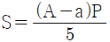
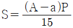
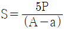
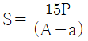
(정답률: 67%)
83. 원통형 보일러의 장점에 대한 설명 중 틀린 것은?
- 비교적 큰 동체를 가지고 있으므로 보유수량이 많다.
- 고압보일러나 대용량에 적당하다.
- 내부의 청소 및 검사가 용이하다.
- 수부가 커 부하변동에 응하기가 용이하다.
(정답률: 56%)
84. 노통의 파형부에서의 최대내경과 최소내경의 평균치가 500mm인 파형 노통에서 두께가 15mm이고 상수 C의 값이 985이면 최고사용압력은 약 몇 kgf/cm2 인가?
- 7.6
- 9.8
- 12.3
- 29.6
(정답률: 21%)
85. 증기압력 1.2kg/cm2의 포화증기(포화온도 104.25℃, 증발잠열 536.1kcal/kg)를 내경 52.9mm, 길이 50m인 강관을 통해 이송하고자 한다. 이 때 트랩 선정에 필요한 응축수량은 약 몇 kg 인가? (단, 외부온도 0℃, 강관 총중량 270kg, 강관비열 0.115kcal/kgㆍ℃이다.)
- 4
- 6
- 8
- 10
(정답률: 50%)
86. 캐리오버(carry-over)의 발생원인으로 가장 거리가 먼 것은?
- 프라이밍 또는 포밍의 발생
- 보일러수의 능축
- 밸브의 급개방
- 저수위 운전
(정답률: 66%)
87. 다음 중 프라이밍과 포오밍의 발생 원인이 아닌 것은?
- 증기부하가 적을 때
- 보일러수에 불순물, 유지분이 포함되어 있을 때
- 수면과 증기취출구와의 거리가 가까울 때
- 수증기변을 급히 열었을 때
(정답률: 73%)
88. 압력이 20kgf/cm2, 건도가 95%인 습포화증기를 시간당 10ton을 발생하는 보일러에서 급수온도가 50℃라면 상당증발량은 약 몇 kg/h인가? (단, 20kgf/cm2의 포화수와 건포화증기의 엔탈피는 각각 215.82kcal/kg, 668.5kcal/kg이다.)
- 11⑤5
- 11474
- 12025
- 12573
(정답률: 19%)
89. 프래시탱크(flash tank)의 기능을 옳게 설명한 것은?
- 증기 건도를 높이는 장치이다.
- 증기를 단순히 저장하는 장치이다.
- 고압 응축수를 저압증기로 이용하는 장치이다.
- 저압 응축수를 고압증기로 이용하는 장치이다.
(정답률: 66%)
90. 증기트랩으로서 가져야 할 조건이 아닌 것은?
- 압력 유량이 소정내에서 변화하지 않아야 한다.
- 슬립, 율동 부분이 적고 마모, 부식에 견뎌야 한다.
- 동작이 확실하고 내구력이 있어야 한다.
- 마찰 저항이 적고 공기 배기가 좋아야 한다.
(정답률: 54%)
91. 송풍기의 출구 풍압을 h[mmAq], 송풍량을 V[m3/min], 송풍기 효율을 [η]으로 표기하면 송풍기 마력 [N]은 어떻게 표시되는가?
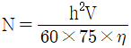
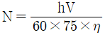
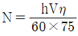
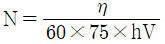
(정답률: 70%)
92. 일반적으로 보일러 부하가 증가할수록 복사 과열기와 대류 과열기의 과열온도는 어떻게 되는가?
- 복사 과열기 온도는 상승하고, 대류 과열기 온도는 하강한다.
- 복사 과열기 온도는 하강하고, 대류 과열기 온도는 상승한다.
- 두 과열기 모두 온도가 상승한다.
- 두 과열기 모두 온도가 하강한다.
(정답률: 53%)
93. 수관식보일러에서 흰패널식 튜브가 한쪽 면에 방사열, 다른 면에는 접축열을 받을 경우 열전달계수를 얼마로 하여 전열면적을 계산하는가?
- 1.0
- 0.7
- 0.5
- 0.4
(정답률: 63%)
94. 트랩의 응축수량이 0.1m3/s, 응축수의 배출속도가 0.⑤m/s일 때 트랩입구의 관경은 몇 mm 로 해야 하는가?
- 974
- 1283
- 1596
- 1366
(정답률: 26%)
95. 경수를 연수화하는 방법에서 Zeolite 법의 장점이 아닌 것은?
- 전(全) 경도를 제거할 수 있다.
- 영구 경도 제거에 특히 효과가 좋다.
- 넓은 장소를 차지하지 않고 침전물이 생기지 않는다.
- 탁수에 사용하면 제거 효율이 좋다.
(정답률: 63%)
96. 드럼에 타원형의 맨홀을 설치할 때에는 어떻게 설치해야 하는가?
- 맨홀 단축 지름의 축을 동체의 축에 평행하게 둔다.
- 맨홀 장축 지름의 축을 동체의 축에 평행하게 둔다.
- 맨홀 단축을 동체의 축에 대해 45° 경사지게 한다.
- 맨홀 장축을 동체의 원주방향, 길이방향의 어느 쪽에 내든 무관하다.
(정답률: 46%)
97. 원수(原水) 중의 용존 산소를 제거할 목적으로 사용되는 약제가 아닌 것은?
- 탄닌
- 히드라진
- 아황상나트륨
- 폴리아미드
(정답률: 63%)
98. 평노통, 파형노통, 화실 및 직립보일러 화실판의 최고 두께는 몇 mm 이하이어야 하는가? (단, 습식화살 및 조합노통 중 평노통은 제외한다.)
- 11
- 22
- 33
- 44
(정답률: 70%)
99. 증기압이 10~20kg/cm2g의 수관보일러에서 보일러수의 pH값은 얼마가 가장 적정한가?
- 7.0~9.0
- 8.0~9.0
- 10.5~11.8
- 12.0~12.8
(정답률: 77%)
100. 다음 중 경관의 탄성(강도)을 높이기 위한 것은?
- 아담슨 조인트
- 브리징스페이스
- 용접조인트
- 그루빙
(정답률: 65%)
기체 옥탄의 연소 엔탈피 = -48220 kJ/kg
물의 증발 엔탈피 = 2441.8 kJ/kg
수증기가 응축되어 물이 되는 과정에서 방출되는 열은 물의 증발 엔탈피와 같으므로, 이를 고려하여 기체 옥탄의 저위발열량을 계산할 수 있다.
기체 옥탄의 저위발열량 = 기체 옥탄의 연소 엔탈피 + 물의 증발 엔탈피
= -48220 + 2441.8
= -45778.2 kJ/kg
하지만, 문제에서는 단위를 kJ/kg으로 요구하고 있으므로, 음수 부호를 제거하여 최종 답인 44750 kJ/kg이 된다. 따라서 정답은 "44750"이다.